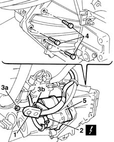
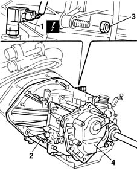
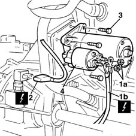
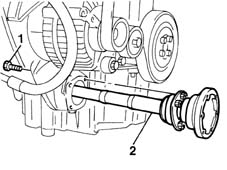
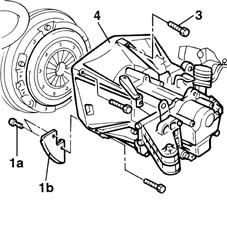

1004D10 power unit (manual gearbox), removed, remove and re-build
- Path
- Procedures > 10 ENGINE UNIT > 1004 ENGINE AND POWER UNIT > 1004D remove engine and wash > 1004D10 power unit (manual gearbox), removed, remove and re-build
- Kind
- repair procedure (removal / refitting; the operation number is the code)
- Applies to
- all engines; all production periods
- Interactive page
- https://sloeber94.github.io/elrnDB-fMltpl/en/#/2891180
Applies to: engines: 1.6 16v; all production periods
 Dismantling
Dismantling
 Reassembling
Reassembling1. With the engine on a stand, open the cover protecting the starter motor wiring.
2. Disconnect the electrical connection from the starter motor.
 | Name | Connector |
|---|---|---|
2 | Starter motor |
3. Undo nut (3a) and disconnect starter motor lead (3b).
4. Unscrew the retaining bolts
5. Remove the starter motor.

Applies to: engines: 1.6 16v; all production periods
Drain the oil from the gearbox if necessary.
1. Disconnect the electrical connection from the reversing lights switch.
| Name | Connector |
|---|---|---|
1 | Air conditioning compressor electro-magnet | L20 |
2. Undo the bolts securing the gearbox-differential to the engine block.
3. Undo the nut securing the gearbox-differential to the engine block.
4. Remove the gearbox-differential unit.

Applies to: engines: 1.6 16v; all production periods
Reassembling
DismantlingFit the gearbox-differential unit and tighten the nut and bolts securing the gearbox to the crankcase.
 | Fastening | Component | Ø | Value (daNm) |
|---|---|---|---|---|
- | Nut | MANUAL GEARBOX | M12 x 1.25 | 5.5 |
| Fastening | Component | Ø | Value (daNm) |
|---|---|---|---|---|
- | Bolt | MANUAL GEARBOX | M12 x 1.25 | 8.8 |
Connect the electrical connection for the reversing lights switch.
| Name | Connector |
|---|---|---|
- | Air conditioning compressor electro-magnet | L20 |
Fit the starter motor.
Tighten the fixing bolts to torque.
| Fastening | Component | Ø | Value (daNm) |
|---|---|---|---|---|
- | Bolt | STARTER SWITCH ASSEMBLY | M8 | 2.2 |
Connect the electrical connection to the starter motor and close the protective cover.
| Name | Connector |
|---|---|---|
- | Starter motor |
Applies to: engines: 1.9 JTD 8V; all production periods
Removing
RefittingWith the engine on a platform, open the starter motor wiring protective cover.
1. Undo nuts (1a) and disconnectwiring (1b).
| Name | Connector |
|---|---|---|
1b | Starter motor |
2. Disconnect the speedometer electrical connection for the mileometer.
| Name | Connector |
|---|---|---|
2 | Speedometer sensor |
3. Unscrew the retaining bolts.
4. Remove the starter motor.

Applies to: engines: 1.9 JTD 8V; all production periods
Drain the gearbox oil if necessary.
1. Unscrew the retaining bolts.
2. Remove the intermediate driveshaft.

Applies to: engines: 1.9 JTD 8V; all production periods
1. Undo bolts (1a) and remove the engine flywheel rear guard (1b).
2. Unscrew the retaining bolts.
3. Remove the gearbox - differential unit.

Applies to: engines: 1.9 JTD 8V; all production periods
Refitting
RemovingFit the gearbox-differential unit to the engine and centre the bell housing using the locating pins.
Screw in the bolts and then tighten to torque.
| Fastening | Component | Ø | Value (daNm) |
|---|---|---|---|---|
- | Bolt | MANUAL GEARBOX | M12 x 1.25 | 8.8 |
| Fastening | Component | Ø | Value (daNm) |
|---|---|---|---|---|
- | Bolt | MANUAL GEARBOX | M10 x 1.25 | 5 |
Screw in the rear flywheel guard retaining bolts.
Fit the intermediate driveshaft into its seat.
Tighten the bolts to torque.
| Fastening | Component | Ø | Value (daNm) |
|---|---|---|---|---|
- | Bolt | INTERMEDIATE DRIVE SHAFT | M8 | 2.5 |
Fit the starter motor to the gearbox.
Tighten the bolts to torque.
| Fastening | Component | Ø | Value (daNm) |
|---|---|---|---|---|
- | Bolt | STARTER SWITCH ASSEMBLY | M8 | 2.2 |
Reconnect the electrical wiring to the starter motor.
Topics linked from this page (2)
Topics that link to this page (4)
- 1004E20 engine - dismantle and re-build following operation 1004e10 - wash and check dismantled parts - re-fit cylinder head and oil sump - does not include repairs to cylinder head and auxiliary unit
- 1004E30 COMPONENTS TRANSFER for half-finished engine
- 1024A10 crank shaft - r + r with engine removed - check main and connecting rod bearingand replace if necessary
- 1084B14 engine oil pump - r+r with power unit removed